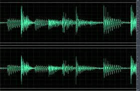

Spotify Audio Analysis using Machine Learning
Analyzed missing values for 2017 Spotify songs using mean substitution method and normalized features. Applied data scaling and computed correlation matrix for 15 features to identify target feature. Used Linear Regression, Decision Tree Regressor, KNN Regression, and Support Vector Regressor (SVR) on 2,000 songs to predict danceability of a song on test dataset. Achieved accuracy of 92.36% in predicting target feature on test data using the SVR modelhere.